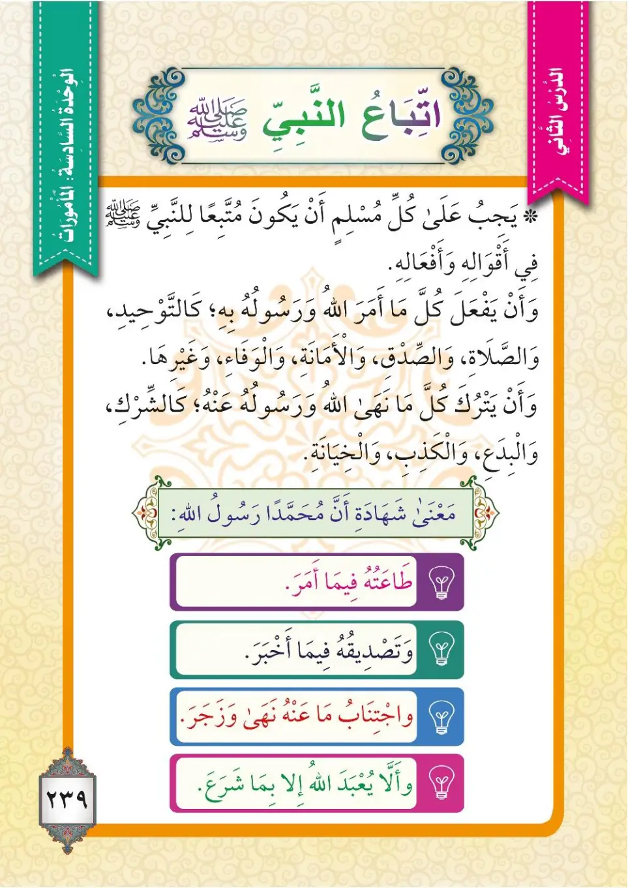
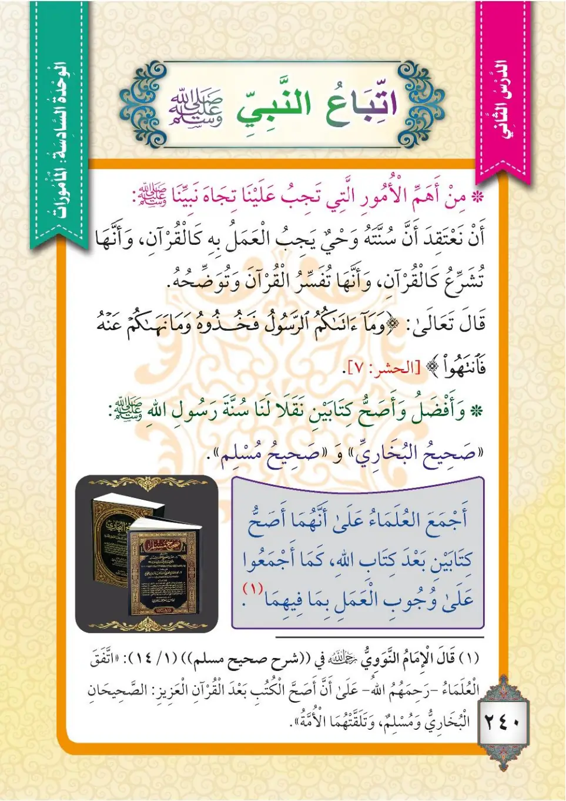

Stage 3·المرحلة الثالثة⭐ Unit 2
وُجُوبُ اتِّبَاعِ النَّبِيِّ ﷺ The Obligation of Following the Prophet
From the Textbookpp. 240–241


على كلِّ مسلمٍ أنْ يكونَ متبعاً للنبيِّ ﷺ في أقوالِهِ وأفعالِهِ، وأنْ يفعلَ كلَّ ما أمرَهُ اللهُ ورسولُهُ به، كالتوحيدِ والصلاةِ والصدقِ والأمانةِ والوفاءِ وغيرِها، وأنْ يتركَ كلَّ ما نهى عنه اللهُ ورسولُهُ، كالشركِ والبدعِ والكذبِ والخيانةِ.
'Ala kulli muslimin an yakuna muttabi'an li-n-nabiyyi ﷺ fi aqwaliHi wa af'aliHi, wa an yaf'ala kulla ma amarahu Allahu wa rasuluHu biHi, ka-t-tawhidi was-salat was-sidqi wal-amanati wal-wafa'i wa ghayriHa, wa an yatruka kulla ma naha 'anHu Allahu wa rasuluHu, ka-sh-shirki wal-bida'i wal-kidhbi wal-khiyanati.
Every Muslim must follow the Prophet ﷺ in his sayings and his deeds, and do everything that Allah and His Messenger have commanded, such as Tawheed, prayer, truthfulness, honesty, loyalty, and other things, and leave everything that Allah and His Messenger have forbidden, such as shirk, innovation, lying, and betrayal.
ஒவ்வொரு முஸ்லிமும் நபி ﷺ அவர்களை அவர்களின் சொற்களிலும் செயல்களிலும் பின்பற்ற வேண்டும்; அல்லாஹ்வும் அவன் தூதரும் கட்டளையிட்ட அனைத்தையும் செய்ய வேண்டும் - தவ்ஹீத், தொழுகை, உண்மை, நம்பிக்கைப் பேணல், வாக்குறுதி நிறைவேற்றல் போன்றவை; அல்லாஹ்வும் அவன் தூதரும் தடை செய்தவற்றையெல்லாம் தவிர்க்க வேண்டும் - ஷிர்க், பித்அத், பொய், மோசடி போன்றவை.
ومعنى شهادةِ أنَّ محمداً رسولُ الله: طاعَتُهُ فيما أمر، وتصديقُهُ فيما أخبر، واجتنابُ ما نهى عنه وزجَر، وألا نعبدَ اللهَ إلا بما شرع.
Wa ma'na shahadati anna Muhammadan rasulu Allah: ta'atuHu fima amara, wa tasdiduHu fima akhbara, wa-ijtinabu ma naha 'anHu wa zajara, wa alla na'buda Allaha illa bima shara'a.
The meaning of bearing witness that Muhammad is the Messenger of Allah: obeying him in what he commands, believing him in what he reports, avoiding what he forbade and warned against, and not worshipping Allah except with what He has prescribed.
முஹம்மது ﷺ அல்லாஹ்வின் தூதர் என்ற சாட்சியத்தின் பொருள்: அவர் கட்டளையிடும் விவகாரத்தில் அவரைக் கீழ்ப்படிதல், அவர் அறிவிக்கும் செய்திகளில் அவரை உண்மையாக்குதல், அவர் தடுத்து எச்சரித்தவற்றை விட்டு விலகுதல், அல்லாஹ்வை அவன் சட்டமிட்ட விதத்தில் மட்டுமே வணங்குதல்.
ومن أهمِّ الأمورِ التي تجبُ علينا تجاهَ نبيِّنا ﷺ: أنْ نعتقدَ أنَّ سنتَهُ وحيٌ يجبُ العملُ به كالقرآنِ، وأنَّها كالقرآنِ تُشرِّعُ، وأنَّها تُفسِّرُ القرآنَ وتوضِّحُه. قال تعالى:
Wa min ahammi al-umuri allati tajibu 'alayna tijaHa nabiyyina ﷺ: an na'taqida anna sunnataHu wahyun yajibu al-'amalu biHi ka-l-Qur'ani, wa annaHa ka-l-Qur'ani tusharri'u, wa annaHa tufassiru al-Qur'ana wa tawaddihuHu. Qala ta'ala:
Among the most important matters incumbent upon us towards our Prophet ﷺ: that we believe his Sunnah is revelation that must be acted upon like the Quran, that it legislates like the Quran, and that it explains the Quran and clarifies it. Allah the Exalted said:
நம் நபி ﷺ மீது நமக்கு அவசியமான மிக முக்கியமான விஷயங்களில்: அவர்களுடைய சுன்னா வஹீ (திருவிளம்) என்பதும், குர்ஆனைப் போன்றே அதைச் செயல்படுத்துவது கட்டாயம் என்பதும், அது குர்ஆனைப் போன்றே சட்டம் இடுகிறது என்பதும், அது குர்ஆனை விளக்கி தெளிவுபடுத்துகிறது என்பதும் ஆகும். அல்லாஹ் கூறினான்:
﴿مَّا أَفَاءَ اللَّهُ عَلَىٰ رَسُولِهِ مِنْ أَهْلِ الْقُرَىٰ فَلِلَّهِ وَلِلرَّسُولِ وَلِذِي الْقُرْبَىٰ وَالْيَتَامَىٰ وَالْمَسَاكِينِ وَابْنِ السَّبِيلِ كَيْ لَا يَكُونَ دُولَةً بَيْنَ الْأَغْنِيَاءِ مِنكُمْ ۚ وَمَا آتَاكُمُ الرَّسُولُ فَخُذُوهُ وَمَا نَهَاكُمْ عَنْهُ فَانتَهُوا ۚ وَاتَّقُوا اللَّهَ ۖ إِنَّ اللَّهَ شَدِيدُ الْعِقَابِ﴾
Ma afa'a Allahu 'ala rasuliHi min ahli al-qura fali-llahi wa li-r-rasuli wa li-dhil-qurba wal-yatama wal-masakini wa-bni-s-sabil, kay la yakuna dulatan bayna al-aghniya'i minkum; wa ma atakumu r-rasulu fa-khudhuHu wa ma nahakum 'anHu fantahu; wa-ttaqu Allaha inna Allaha shadidu al-'iqab.
Whatever gains God has turned over to His Messenger from the inhabitants of the villages belong to God, the Messenger, kinsfolk, orphans, the needy, the traveller in need- this is so that they do not just circulate among those of you who are rich––so accept whatever the Messenger gives you, and abstain from whatever he forbids you. Be mindful of God: God is severe in punishment.
அல்லாஹ் தன் தூதருக்கு ஊர்களிலிருந்து (போரின்றி) அளித்த வருமானங்கள் அல்லாஹ்வுக்கும், தூதருக்கும், உறவினர்களுக்கும், அநாதைகளுக்கும், ஏழைகளுக்கும், வழிப்போக்கர்களுக்குமே உரியன; உங்களில் பணக்காரர்களிடையே மட்டும் சுழலாமல் இருக்கும் பொருட்டு. தூதர் உங்களுக்குத் தருவதை எடுத்துக் கொள்ளுங்கள்; அவர் தடுப்பதிலிருந்து விலகுங்கள். அல்லாஹ்வை அஞ்சுங்கள்; நிச்சயமாக அல்லாஹ் கடுமையான தண்டனை உடையவன்.
وأفضلُ كتابينِ نُقِلا إلينا سُنَّةَ رسولِ الله ﷺ: «صحيحُ البخاري»، و«صحيحُ مسلم». وأجمعَ العلماءُ على أنَّهما أصحُّ كتابينِ بعدَ كتابِ الله، كما أجمعوا على وجوبِ العملِ بما فيهِما.
Wa afdalu kitabayni nuqila ilayna sunnata rasulillahi ﷺ: «Sahihu al-Bukhari», wa «Sahihu Muslim». Wa ajma'a al-'ulama'u 'ala annaHuma asahhu kitabayni ba'da kitabi Allah, kama ajma'u 'ala wujubi al-'amali bima fihiMa.
The two best books that have been transmitted to us as the Sunnah of the Messenger of Allah ﷺ are: 'Sahih al-Bukhari' and 'Sahih Muslim'. The scholars have unanimously agreed that they are the two most authentic books after the Book of Allah, just as they have unanimously agreed on the obligation of acting upon what they contain.
அல்லாஹ்வின் தூதர் ﷺ அவர்களின் சுன்னாவாக நமக்கு அனுப்பப்பட்ட சிறந்த இரு நூல்கள்: "ஸஹீஹ் அல்-புகாரி" மற்றும் "ஸஹீஹ் முஸ்லிம்". அல்லாஹ்வின் வேதத்திற்குப் பிறகு மிகத் துல்லியமான இரு நூல்கள் இவையே என்று அறிஞர்கள் அனைவரும் ஒருமித்து ஏற்கனவர்கள்; அவற்றில் உள்ளதன் படி செயல்படுவது கட்டாயம் என்றும் ஏகோபித்தனர்.